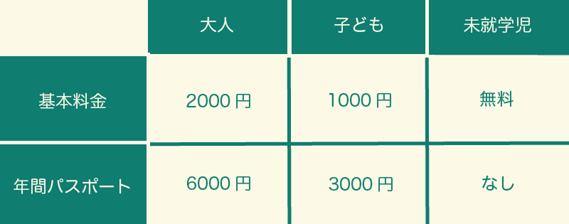
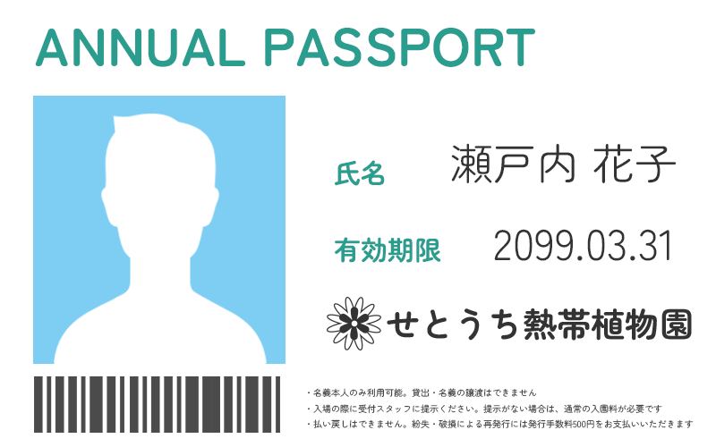
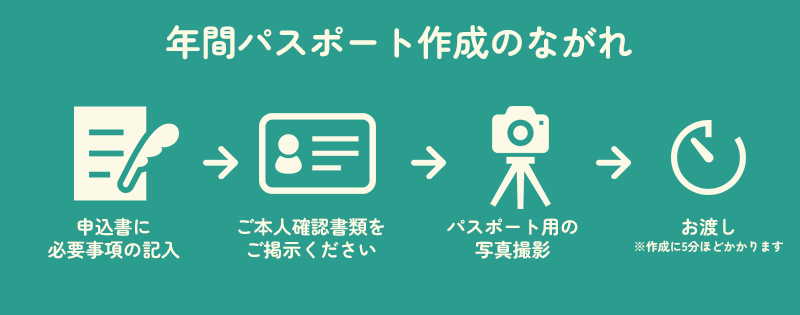

入場料

・中学生・高校生の方は、チケットカウンターにて学生証をご提示ください。
・表示価格はすべて税込です。
・20名以上の団体利用については、お電話にてお問い合わせください。
障がい者手帳をお持ちの方
一般料金でご入場の場合
障がい者手帳をご提示の方とご同伴者（1名様）は、入場料金が半額になります。
年間パスポートをご購入の場合
障がい者手帳をご提示の方は、年会費が半額となります。
年間パスポート

何度でも楽しめる、お得な年間パスポート！
1年間、何度でも入園できるお得なパスポートです。
ご家族での来園や季節ごとの植物の変化を楽しみたい方におすすめです。
年間パスポートのお申し込みは、受付にて承ります。

※ご入場は、記名されたご本人様のみに限ります。また、年間パスポートの貸与・譲渡はできません。
※ご入場の際は、年間パスポート受付スタッフにご提示ください。ご提示のない場合は、一般入場料が必要となります。
なお、ご本人確認のため身分証などの提示を求める場合があります。
※学年は始業日にかかわらず4月1日切り替えとなります。
※有効期間途中での払い戻しはできません。紛失・破損等での再発行の場合は別途費用（500円）をお支払いいただきます。
※ご購入済みの年間パスポートについて、返金等は受け付けておりません。